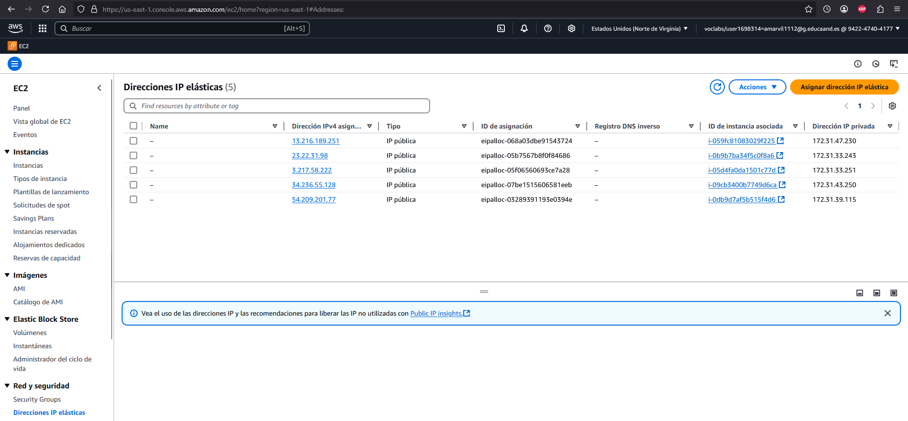
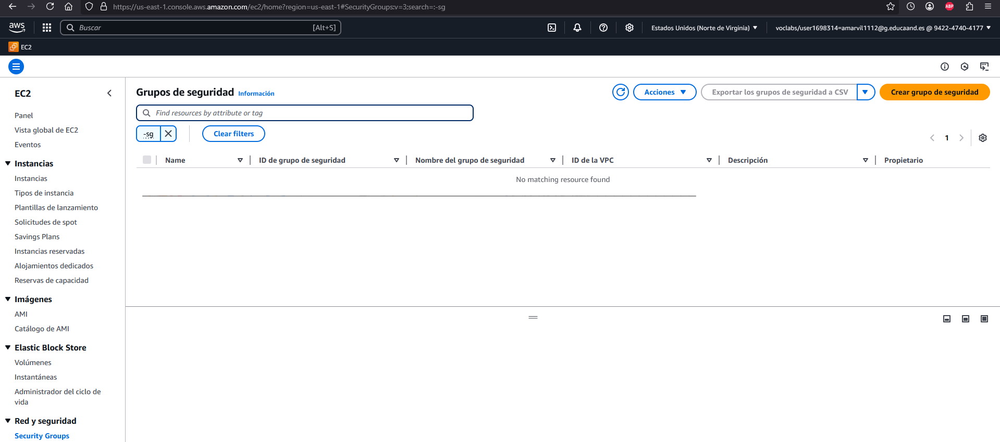

Terraform para Practica 1.11
Para esta práctica vamos a utilizar Terraform, una herramienta de infraestructura como código que permite crear, modificar y eliminar infraestructura de forma automática.Puede gestionar los recursos de diferentes proveedores de servicios en la nube, como AWS.
Antes de ejecutar la práctica, vamos a necesitar la instalación del plugin HashiCorp Terraform. Una vez instalado, dentro de nuestro repositorio ejecutaremos en la terminal terraform init para descargar los plugins necesarios del proveedor que se especifica en el archivo de configuración.
Vamos a tener 3 scripts, en el variables se definiran las variables que se utilizarán en el script main.tf. En main.tf crearemos los grupos de seguridad, las instancias e IPs elásticas necesarias para crear la infraestructura de la práctica 1.11. En output.tf mostraremos las IPs públicas de las instancias.
Para la creación de esta infraestructura ejecutaremos en la terminal terraform apply para aplicar los cambios y crear los recursos del archivo de configuración en nuestra cuenta de AWS.


Una vez que termine la ejecución del comando iremos a AWS a comprobar que se han creado los grupos de seguridad, las IPs elásticas y las instancias que tendrán que tener asociados su grupo de seguridad correspondiente y una IP elástica.


Para eliminar los recursos que hemos creado solo habrá que ejecutar el comando terraform destroy. Veremos que en AWS se habrá eliminado todo lo creado anteriormente.

